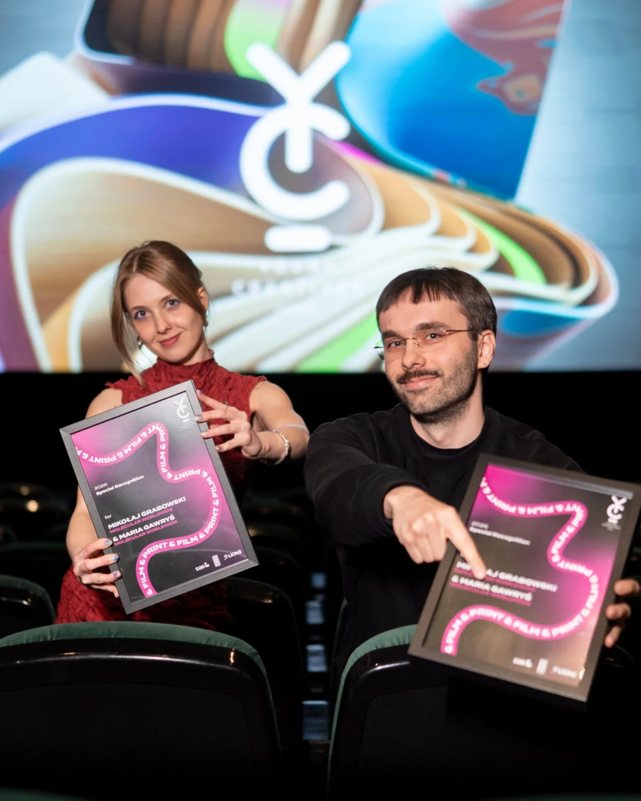
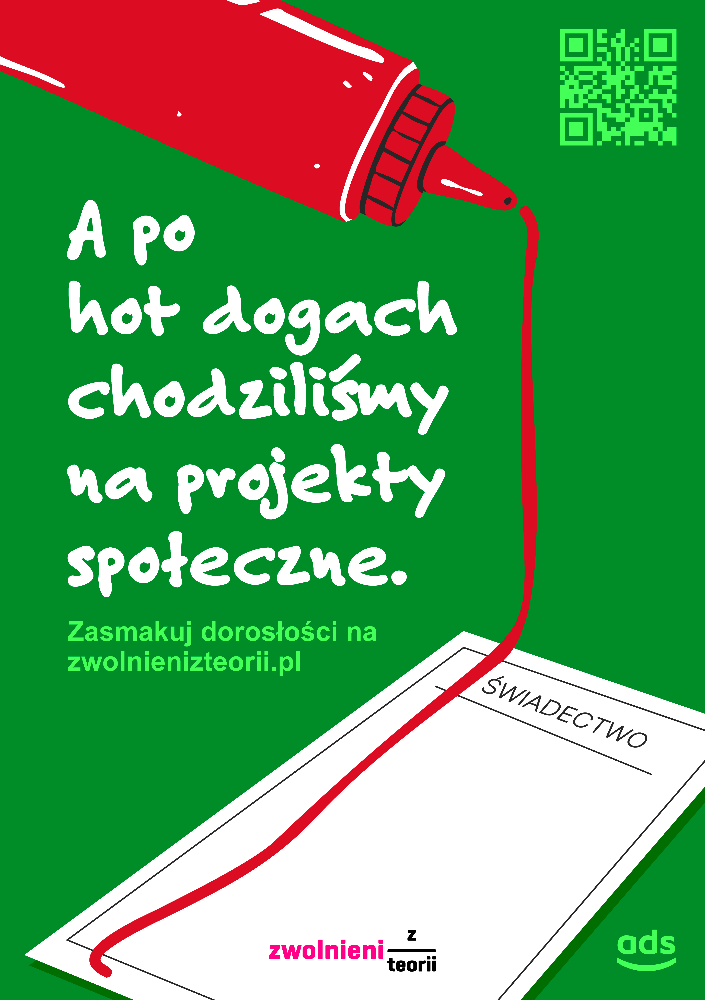
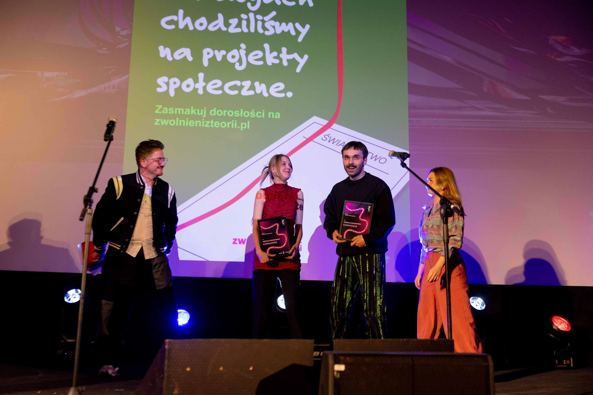

Young Creatives competition is aimed at junior employees in creative and marketing business, held by Klub Twórców Reklamy since 26 years ago. It gives young people a chance to work on real briefs for real clients. The contestants, competing in pairs, have 24 hours to complete their task, which is then judged by the industry professionals. More about Young Creatives competition here ▸.
Together with Maria Gawryś ▸, my colleague from Molecular Creative I took part in Print category and got an honourable mention.

this is Maria Gawryś and me happy woth our diplomas :) / photo by M. Murawski
CLIENTS: Zwolnieni z Teorii – an NGO enabling pupils to carry out their own social / community projects, through which they acquire the skills needed in the labour market, such as project management, empathy, creativity, teamwork and problem-solving; and Żabka Ads – a touchpoint operating in the popular chain of convenience stores with approximately 11,000 locations across Poland, operated by around 9,000 franchisees.
BRIEF We were tasked with designing a digital static ad for in-store screens that would encourage pupils to sign up at the NGO's website. The main creative goal was to break throught the lack of confidence of young people's self-agency and inspiring the idea that after-school social activity will boost their experience in their future professional careers.

translation: And after hot-dogs we used to go for community projects. / Taste the adulthood at zwolnienizteorii.pl
OUR EXECUTION We played with the end-of-schoolyear diploma. Students with high
marks receive one with a red stripe that distinguishes them among others.
Once a reward, now regarded as a thing of the past by many parents. We decided
to give the kids a means to achieve greatness on their own terms – by gaining
real experience after school and making impact. As for the red stripe, they can paint it
with a bottle of ketchup when they go to Żabka store for a hot dog! And quoting
pope John Paul II: After the finals we used to go for cream cakes ▸ – we reply
with our headline: and after cream cakes hot dogs we used to go for
commmunity projects!
Our poster will be displayed in Żabka convenience stores nationwide.

photo by M. Murawski
© 2026 Mikołaj Grabowski, Maria Gawryś